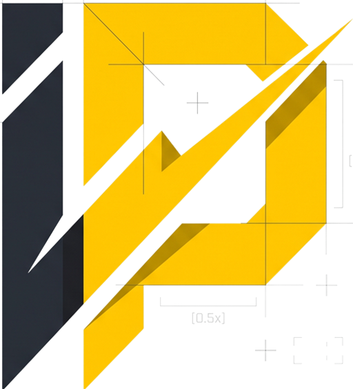

Signing you in…
You're on your way to I-PASSBOOK.
INDRONES-AFTER SALES SERVICE BOOK
By continuing, you acknowledge that you understand and agree to the Terms & Conditions and Privacy Policy
Made with ♥ by Mr. Raza For Indrones·
No IR selected
Pick an IR from the list to open its passbook.